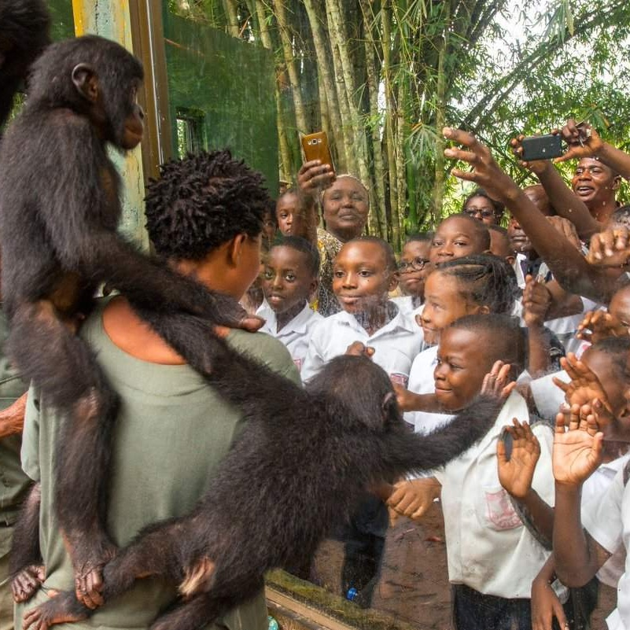
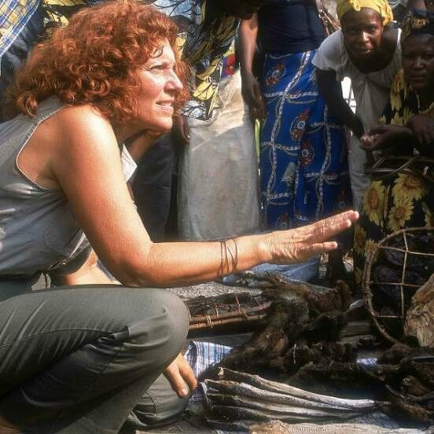
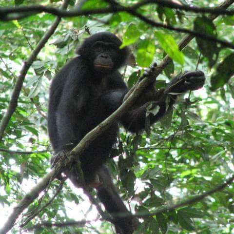
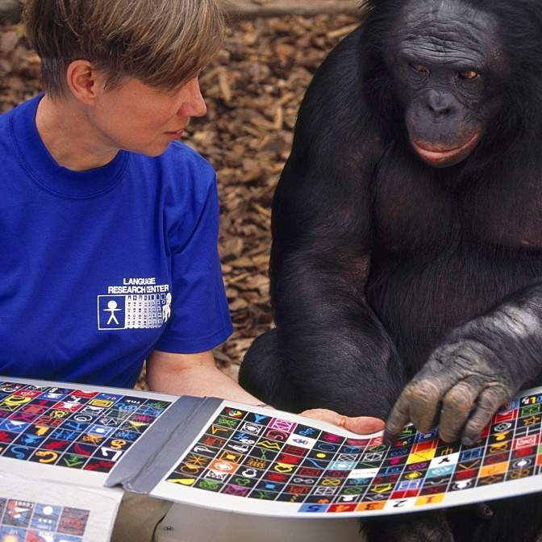

What do we do?
Please click on each topic for further details
To protect bonobos, we decided to combat the two main threats: habitat loss and hunting for bushmeat. We do so by engaging in the Conservation of the Rainforest and Community Development - both ensuring long-term protection of bonobos and other endangered species.
Over the years, we were able to expand the protected rainforest area from 20K to 120K acres and turned it into an officially recognized federal forest reserve in the Democratic Republic of the Congo.
We're also engaged in the communities close to the rainforest by delivering medicine, medical equipment, educational materials for schools and much more. We truly believe that this will improve the lives of people living there as well as reduce the need for bush meat.
In Congo, it's illegal to own, kill or sell bonobos, which are an endangered species and protected by law. Nevertheless, adult bonobos are primarily killed for bushmeat, and their infants are sold as pets on the black market.
When we are alerted that a bonobo has been found, we contact the Congolese Ministry of Environment and work with them to confiscate the bonobo and bring the bonobo to Lola ya bonobo sanctuary.
Veterinary Care
The orphans arrive often in critical condition. Besides being malnourished and dehydrated, they can have respiratory infections, parasites, skin diseases, as well as physical wounds. Our veterinary staff treat illnesses and injuries, and carry out tests for suspected diseases.
Orphan Nursery
The bonobos who arrive are often extremely traumatized and some die because of sheer stress. To combat this, infant bonobos are immediately given to a substitute mother who give them all the love and reassurances they need to survive.
The Sanctuary
In the world's only bonobo sanctuary they live in a semi-wild environment, are nursed back to health and cared for as long as needed. If a release is not possible, they will live here for the rest of their lives.
Since 2009, we have conducted the world’s only bonobo releases, where groups of bonobos were returned to the wild. There have been three wild births, officially making the project a success.
Although bonobos are one of the closest living relatives to humans, there is still very little known about them. Researchers can play an important role in helping us meet our conservation and welfare goals since we believe that people protect what they respect and people respect what they understand.
We, therefore, have hosted researchers from top institutions from all over the world to conduct cognitive, behavioral, physiological, genetic and morphological research. All research with the bonobos happen in a strictly non-invasive way and the information gained must benefit the individual bonobo being studied as well as the species.
Protect
To protect bonobos, we decided to combat the two main threats: habitat loss and hunting for bushmeat. We do so by engaging in the Conservation of the Rainforest and Community Development - both ensuring long-term protection of bonobos and other endangered species.
Over the years, we were able to expand the protected rainforest area from 20K to 120K acres and turned it into an officially recognized federal forest reserve in the Democratic Republic of the Congo.
We're also engaged in the communities close to the rainforest by delivering medicine, medical equipment, educational materials for schools and much more. We truly believe that this will improve the lives of people living there as well as reduce the need for bush meat.
Over the years, we were able to expand the protected rainforest area from 20K to 120K acres and turned it into an officially recognized federal forest reserve in the Democratic Republic of the Congo.
We're also engaged in the communities close to the rainforest by delivering medicine, medical equipment, educational materials for schools and much more. We truly believe that this will improve the lives of people living there as well as reduce the need for bush meat.
Rescue
In Congo, it's illegal to own, kill or sell bonobos, which are an endangered species and protected by law. Nevertheless, adult bonobos are primarily killed for bushmeat, and their infants are sold as pets on the black market.
When we are alerted that a bonobo has been found, we contact the Congolese Ministry of Environment and work with them to confiscate the bonobo and bring the bonobo to Lola ya bonobo sanctuary.
When we are alerted that a bonobo has been found, we contact the Congolese Ministry of Environment and work with them to confiscate the bonobo and bring the bonobo to Lola ya bonobo sanctuary.
Rehabilitation
Veterinary Care
The orphans arrive often in critical condition. Besides being malnourished and dehydrated, they can have respiratory infections, parasites, skin diseases, as well as physical wounds. Our veterinary staff treat illnesses and injuries, and carry out tests for suspected diseases.
Orphan Nursery
The bonobos who arrive are often extremely traumatized and some die because of sheer stress. To combat this, infant bonobos are immediately given to a substitute mother who give them all the love and reassurances they need to survive.
The Sanctuary
In the world's only bonobo sanctuary they live in a semi-wild environment, are nursed back to health and cared for as long as needed. If a release is not possible, they will live here for the rest of their lives.
Veterinary Care
The orphans arrive often in critical condition. Besides being malnourished and dehydrated, they can have respiratory infections, parasites, skin diseases, as well as physical wounds. Our veterinary staff treat illnesses and injuries, and carry out tests for suspected diseases.
Orphan Nursery
The bonobos who arrive are often extremely traumatized and some die because of sheer stress. To combat this, infant bonobos are immediately given to a substitute mother who give them all the love and reassurances they need to survive.
The Sanctuary
In the world's only bonobo sanctuary they live in a semi-wild environment, are nursed back to health and cared for as long as needed. If a release is not possible, they will live here for the rest of their lives.
Release
Since 2009, we have conducted the world’s only bonobo releases, where groups of bonobos were returned to the wild. There have been three wild births, officially making the project a success.
Research
Although bonobos are one of the closest living relatives to humans, there is still very little known about them. Researchers can play an important role in helping us meet our conservation and welfare goals since we believe that people protect what they respect and people respect what they understand.
We, therefore, have hosted researchers from top institutions from all over the world to conduct cognitive, behavioral, physiological, genetic and morphological research. All research with the bonobos happen in a strictly non-invasive way and the information gained must benefit the individual bonobo being studied as well as the species.
We, therefore, have hosted researchers from top institutions from all over the world to conduct cognitive, behavioral, physiological, genetic and morphological research. All research with the bonobos happen in a strictly non-invasive way and the information gained must benefit the individual bonobo being studied as well as the species.
But we can't do it without you!
How can you help us?
Adopt a Bonobo
When adopting a bonobo for 50 $ (one-time contribution), you help one of our bonobos directly. You support us with their cost of living which includes providing food and medical care. In return you will receive our thoughtful adoption kit, which includes:
- High-quality picture of your bonobo
- Adoption Certificate
- "Spotlight: Bonobo" (leaflet with interesting bonobo facts)
- Bonobo plush
Sponsor our work
In contrast to adopting a bonobo, you support all aspects of our work. This gives us the freedom to not only care for the bonobos that are currently in our sactuary, but also to combat the root causes so that bonobos don't need to come to our sanctuary at all. This also allows us to use your contribution in the area where it's needed most.
You have the flexibility to chose the amount as well as type of contribution (monthly vs one-time donation). As confirmation you will receive a donation receipt.